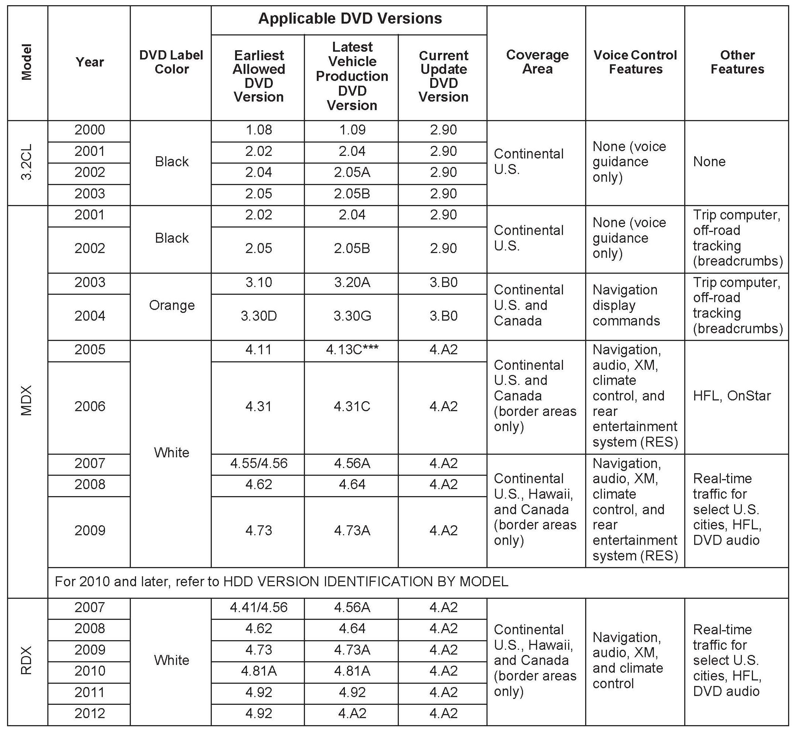
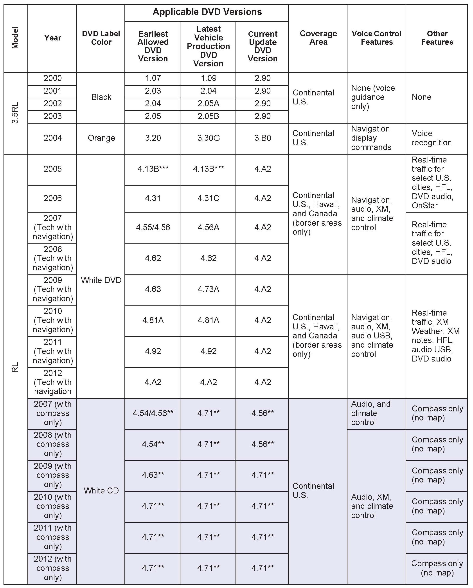
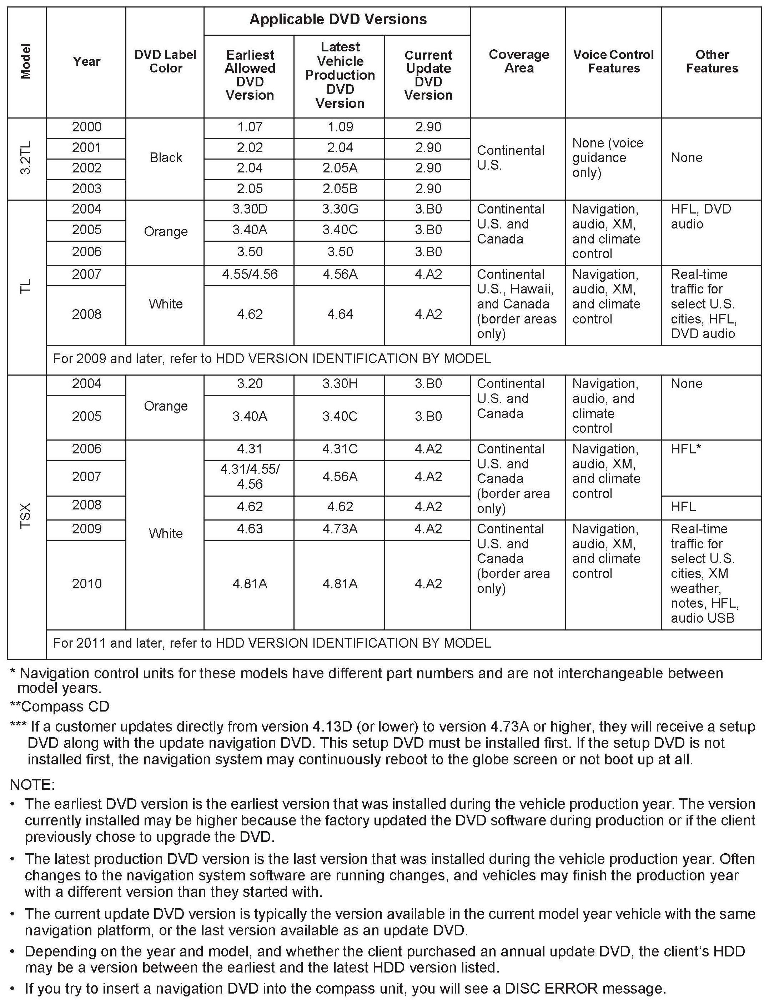
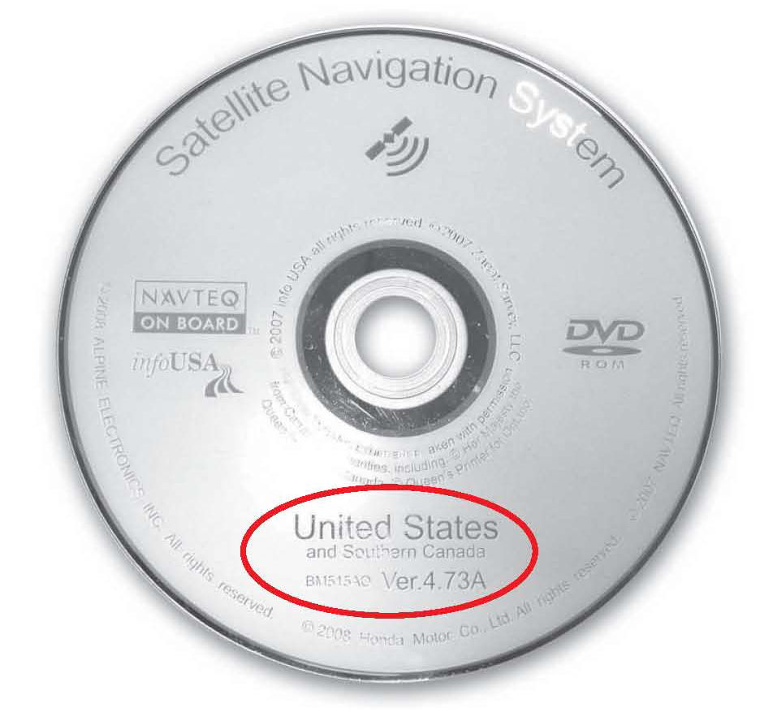
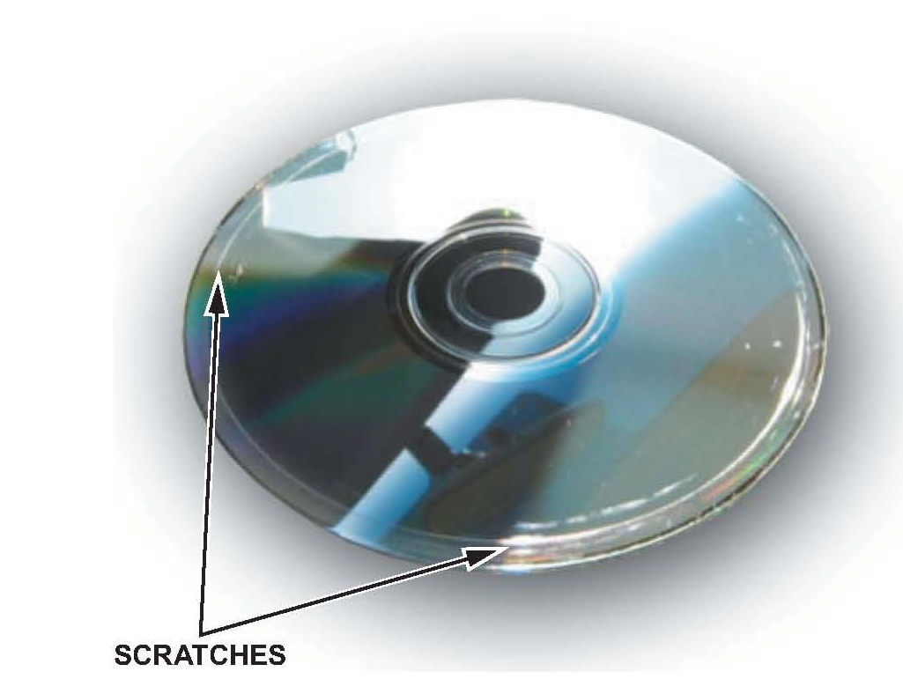
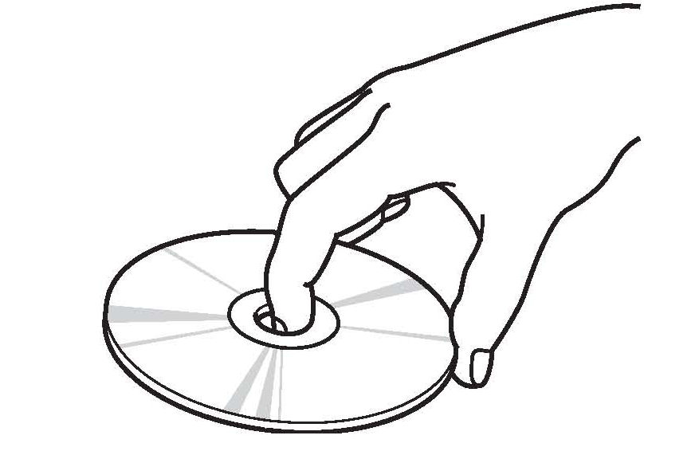
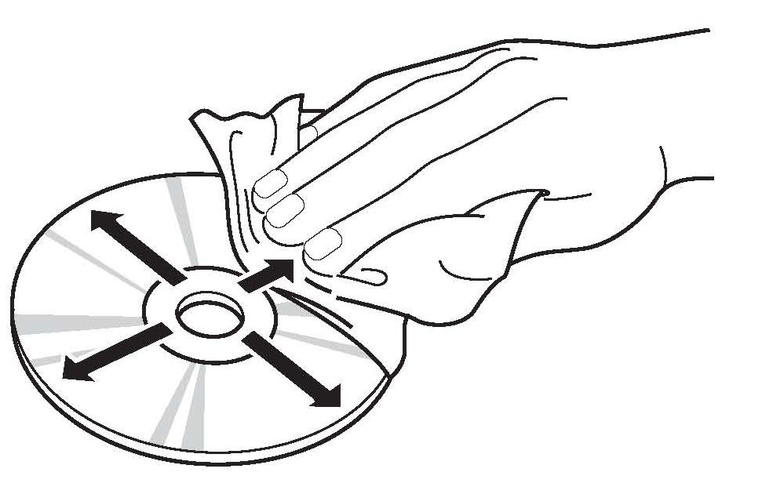
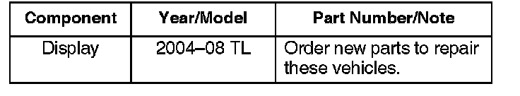
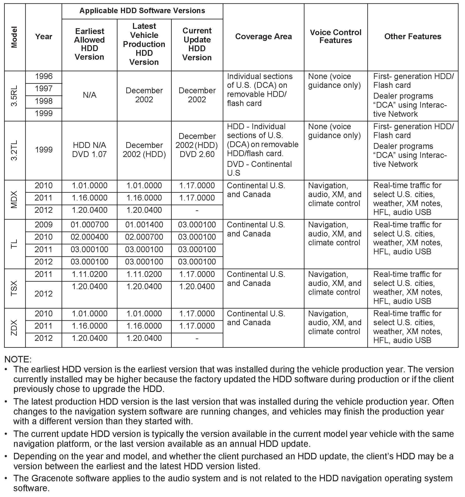
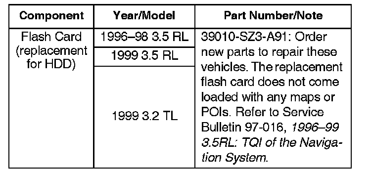

DVD and HDD Navigation System Information
DVD NAVIGATION TYPE IDENTIFICATION BY MODELFor navigation Systems that use a navigation DVD, remove the navigation DVD and compare the label color and version to the following chart. Clients may obtain navigation DVDs from a variety of sources (friends, internet auctions, etc.) outside the normal ordering process. If they install an incorrect DVD, it can produce an error message, or cause the navigation system to malfunction. If the label is the wrong color or wrong version, replace it with the correct navigation DVD before replacing the navigation unit.



For compass systems that use a compass CD, remove the CD and compare the label version to the following chart. Clients may try to install a navigation DVD. If they install a navigation DVD or the wrong compass CD, it can produce an error message, or cause the compass system to malfunction. If the label is the wrong color or wrong version, replace it with the correct compass CD before replacing the compass unit.
EARLIEST DVD VERSION APPLICATION FOR EACH MODEL
Each navigation system DVD contains a map/POI (point of interest) database and the navigation system software for each model that it supports. Inserting an older DVD (such as an earlier version than indicated in the table) can cause problems since it lacks the software to provide the specific features needed for that model. Unfortunately, the navigation software may not detect or warn you that the version is outdated, and it may even appear to operate normally.
NOTE:
Replacing a DVD just because the version number is higher is not always justified. A higher software version does not necessarily mean it contains newer software for your model. The DVD contains software for all models that use the same color DVD, and a revised number may or may not have software fixes or upgrades for the model in question.
Typical warning symptoms that an outdated DVD is being used include:
^ An Acura model navigation screen may display a Honda logo while booting up.
^ A newly introduced model feature (for example, XM radio or HFL) may not display properly, and Extension may display instead.
NOTE:
Extension may be displayed when using Music Link, but should never be displayed when XM or USB is selected.
^ The current street being driven on may not appear properly at the bottom of the map screen display when the vehicle is driven on a main road.
NOTE:
If necessary, compare the navigation system operation to a same model vehicle with a current DVD.
HOW TO IDENTIFY NAVIGATION DVD OR COMPASS CD VERSIONS
To determine the navigation or compass version on a particular model, start the engine, then locate the navigation or compass control unit (see the appropriate service manual). Open the DVD door, and push the eject button to eject the disc. Hold the disc by the edges, and check for these items:
^ The label color (see the chart on the previous pages for model application).
^ Read the DVD or CD version listed on the bottom of the label, and note it on the repair order. You will need this version number in these instances:
- To verify that the DVD or CD version is appropriate for the vehicle
- Any time you call Tech Line regarding a navigation or compass system issue
- To answer client inquiries concerning update or coverage issues

NOTE:
Clients may obtain DVDs from sources outside the normal ordering process. If you determine this is the case, recommend that your client purchase the appropriate DVD from the Acura Disc Fulfillment Center (see ORDERING A REPLACEMENT DVD, UPDATE DVD, or COMPASS CD).
Software Patches
Occasionally, problems are discovered after a software version is released, either with the original software version that came with the vehicle, or a yearly update DVD purchased by the client. Many software related problems can be repaired with software updates (patch CD).
Before assuming a navigation problem is hardware related, check the iN for software updates, and see if your client's problem is resolved with a patch CD.
CHECKING A DISC (DVD OR CD) FOR DAMAGE
Check the underside of the disc for signs of mishandling. Deep scratches, swirl marks, or fingerprints can cause random lock-ups, reboots, and DVD read or format errors.

NOTE:
A damaged DVD or CD is not covered under warranty unless the disc is damaged by the navigation or compass unit. Damage by the navigation or compass unit typically appears as circular scratches caused by something rubbing against the disc as it spins. The damage may appear as arcs or complete circles on the disc reading surface. For more information, refer to Service Bulletin 08-035, DVD Head Error; or No Route Displayed, and Navigation DVD is Scratched.
^ Verify that the underside of the disc is silver, and not a copy with a bluish color. Copies do not work properly and can cause other symptoms that mimic hardware problems.
^ If the disc is dirty, go to DISC (DVD AND CD) HANDLING AND CLEANING.
^ If the DVD is defective, or has any of the issues mentioned above that are not covered by a service bulletin, return the vehicle to your client and recommend that they order the proper DVD from the Acura Disc Fulfillment Center (see ORDERING A REPLACEMENT DVD, UPDATE DVD, OR COMPASS CD).
NOTE:
If the navigation or compass unit is found to be defective (through the appropriate service manual troubleshooting procedures) and the disc will not eject, order a replacement control unit, and also order a DVD or CD from the Acura Disc Fulfillment Center. (New control units do not come with a navigation DVD or compass CD.)
ORDERING A REPLACEMENT DVD, UPDATE DVD, OR COMPASS CD
To order a navigation DVD, you can call the Acura Disc Fulfillment Center. The Fulfillment Center knows the correct color DVD application for each vehicle and can provide the latest version. To order online, go to the website and use the dropdown menu under Find Updates. The client's navigation manual provides additional ordering and installation information. This information is located in the Client Assistance section.
To order a compass CD, you cannot use the online website. Call the Acura Disc Fulfillment Center, select option 3 for dealerships, then select option 2 for map patches and specify you are ordering a compass CD for the RL.
NAVIGATION DVD OR COMPASS CD STOCKING CONCERNS
Never stock navigation system DVDs, because software versions are constantly updated. Some dealerships also remove the DVDs from new or used vehicles, store them in a common, locked location, then reinstall them when the vehicle is sold. This is a mistake because the various navigation systems are version sensitive (meaning that even if the correct color DVD is used, an older version may not work).
The same issues apply to compass CDs, as on the surface, they appear similar to navigation DVDs. Since compass-equipped vehicles appear similar to navigation-equipped vehicles, this increases the chances of the wrong disc being inserted.
Stocking navigation DVDs or compass CDs or storing navigation DVDs and compass CDs in a common location can result in any of these problems:
^ Incorrectly colored DVDs or compass CDs being put into navigation vehicles. This causes the system to display error messages, or it causes system malfunctions that mimic a hardware problem. This results in the client driving away with a malfunctioning navigation system.
^ The DVD version is out-of-date or incompatible with a particular model. This inconveniences your client by delaying the repair, or by causing additional (and unnecessary) returns to your dealership.
^ A navigation DVD being put into a compass vehicle causes the system to display DISC ERROR messages.
^ The client experiences software bugs or other issues that have already been resolved in later versions currently available at the fulfillment center.
These ordering procedures are recommended:
^ Always order navigation DVDs on an as-needed basis. During a typical model year, each color DVD may undergo a half-dozen "software only" version upgrades to fix minor issues on some or all models the DVD supports. This is normal. Usually, only the letter at the end of the version number changes, while the database (maps and POIs) remain unchanged through the year.
^ Never promise your clients future free updates. There are no free programs for updating navigation DVDs. Update DVDs are generally available for purchase each fall. The online DVD order site provides information when an update for a particular color DVD is available.
^ Compass CDs are seldom updated. Order a compass CD only if it is damaged and needs replacement.
NOTE:
^ Refer to the version chart in this service bulletin when ordering any navigation system DVD.
^ Damaged discs are not warrantable unless they are damaged by the navigation unit.
DISC (DVD AND CD) HANDLING AND CLEANING

To avoid damaging or leaving fingerprints on the disc, always handle it by the edges and place it in a jewel case whenever it is outside the control unit. Deep scratches or fingerprints on the back of the disc can cause intermittent rebooting or other system errors.

Smudges and fingerprints can be carefully removed using a mild cleaner and soft cloth designed to clean eyeglasses. To clean a disc, first apply the cleaning solution to the disc, and using a clean soft cloth, very gently wipe across the disc from the center to the outside edge, never in a circular motion.
Do not place stabilizer rings or labels on the disc.
INSTALLING A NAVIGATION DVD OR COMPASS CD
NOTE:
For compass systems, the procedure is the same except there is no disclaimer screen, and you do not need to map-match the vehicle.
1. Park the vehicle outside, and start the engine.
2. Eject the old DVD.
3. Install the new navigation DVD. Be sure to close the door on the navigation unit.
4. Select OK on the disclaimer screen, then turn the ignition switch to LOCK (0). Wait 1 minute, then restart the engine.
5. Select OK on the disclaimer screen.
6. Drive the vehicle on a mapped road until the road name appears at the bottom of the map screen. The system is now map-matched.
PRECAUTION ON CLIENT "SNEAK PREVIEWS" OF A NEWER NAVIGATION DVD VERSION
Your client might request a look (or "sneak preview") at features in the latest navigation software. You should never preview a navigation DVD in a client's vehicle. Inserting a new DVD installs the latest software from the DVD into the memory of the client's navigation system. When the original DVD is reinstalled, the newer software remains in memory and is often incompatible with the client's original DVD Map and P01 database.
If your client wishes to see the latest navigation coverage or software features, demonstrate it on an in-stock vehicle that already has the latest DVD version.
If a newer version is loaded accidentally, either by the dealer or the client, one possible remedy is to enter the navigation diagnostic mode's Version screen and do a forced download. Refer to the iN for applicable patches that may need reinstalling.
If a forced download does not reinstall the original software, the navigation unit may need to be replaced. This is not covered under warranty.
NOTE:
A forced download is not possible when the client upgrades their 2005 white-labeled DVD version 4.13 with an '06 or later DVD version 4.31 or greater. Either a new version DVD must be purchased, or the navigation unit must be replaced.
PITFALLS WHEN INTERCHANGING NAVIGATION DVD/PARTS DURING DIAGNOSIS
When troubleshooting navigation system problems, ensure that the known-good vehicle is the same software version year and model as the vehicle being serviced. Mixing incompatible navigation DVDs or other system components can delay the troubleshooting process by causing side effects unrelated to the original problem. See the table under DVD NAVIGATION TYPE IDENTIFICATION BY MODEL.
REPLACING THE NAVIGATION UNIT AND TRANSFERRING THE NAVIGATION DVD
If your diagnosis determines the client's navigation unit is faulty, you will need to order a remanufactured replacement navigation unit (in warranty), or send it out for repair (out of warranty). Refer to Service Bulletin 06-001, Audio, Navigation, and RES Unit In-Warranty Exchange, and Audio and DVD Player Out-of-Warranty Repair). The order procedure on the iN is designed to minimize unnecessary replacement of parts due to client settings, unfamiliarity with system operation, or software/database issues that cannot be resolved by hardware replacement. The Navigation System Worksheet asks the following navigation information:
^ The client's DVD color and version number on the label, and condition of the DVD (inspection for scratches).
^ The client's complaint, symptom, and other details to allow duplication of the issue by the factory.
^ The results of the diagnostic procedure from the service manual.
This information helps the Remanufacture Center and the factory to understand the problem and properly repair the core.

NOTE:
The parts are not available through the Remanufactured Parts Center:
Replacement navigation units do not come with a DVD because the parts center has no way of knowing the client's current DVD version. When the new navigation unit arrives, and before disconnecting the original navigation unit, do this:
1. Save the client's data (if equipped) using the Save Users Memory procedure:
^ Refer to the applicable service manual, or
^ Online, enter keywords NAVI DIAG, select Navigation System Diagnostic Mode from the list, and look for Save Users Memory.
2. With the engine running, open the navigation unit door, and eject the DVD from the original unit. To avoid scratching or damaging the DVD, temporarily place the DVD in a jewel case.
NOTE:
If the DVD will not eject, write that information clearly on the core return form, and order a DVD from the Acura Disc Fulfillment Center.
3. Install a new navigation unit:
^ Refer to the navigation section in the applicable service manual, or
^ Online, enter keywords NAVI REMOVAL, and select Navigation Unit Removal/Installation from the list.
4. Reinstall the client's original DVD, verifying that the DVD is free of deep scratches or smudges.
5. Check online for any service bulletins prescribing patches that should be applied to the replacement navigation unit.
HDD VERSION IDENTIFICATION BY MODEL
For navigation Systems that use the first-generation HDD/flash memory card (1996-99 3.5RL, 1999 3.21L), transfer the HDD or flash memory card to the replacement navigation unit:
^ 1996-99 3.5RL models: If you are replacing the navigation unit, make sure you transfer the HDD or the flash memory card from the original unit to the replacement unit.
^ 1999 3.2TL models: The original HDD navigation unit is no longer available. You can either try to send it to Alpine for repair (see Service Bulletin 06-001, Audio, Navigation, and RES Unit In-Warranty Exchange and Out-of-Warranty Repair), or replace it with the 2000 IL DVD navigation unit. Make sure you also order a black label DVD since the DVD does not come with the new navigation unit.

For navigation systems that use an HDD, check the software version and compare the version to the chart.
HOW TO IDENTIFY HDD SOFTWARE VERSIONS
To determine the navigation software version in a vehicle:
^ Make sure you are on the map screen, then press INFO.
^ Push the interface dial to the right to select OTHER.
^ Rotate the interface dial to highlight System/Device Information, then press the ENTER button.
^ The following information appears:
- Software version
- Database version
- Device number
^ To exit, press the MAP/GUIDE button.
Software Patches
Occasionally, problems are discovered after a software version is released, either with the original software version that came with the vehicle, or a map update purchased by the client. Many software related problems can be repaired with software updates (patch CD).
Before assuming a navigation problem is hardware related, check the iN for software updates, and see if your client's problem is resolved with a patch CD.
REPLACING THE NAVIGATION CONTROL UNIT OR THE NAVIGATION HDD
First Generation HDD
If your diagnosis determines the client's navigation unit is faulty, you will need to order a new part or send it out for repair. Refer to Service Bulletin 06-001, Audio, Navigation, and RES Unit In-Warranty Exchange and Out-of-Warranty Repair). The order procedure on the iN is designed to minimize unnecessary replacement of parts due to client settings, unfamiliarity with system operation, or software/database issues that cannot be resolved by hardware replacement. The Navigation System Worksheet asks the following navigation information:
^ The client's complaint, symptom, and other details to allow duplication of the issue by the factory.
^ The results of the diagnostic procedure from the service manual.
This information helps the factory to understand the problem and properly repair the core.

NOTE:
The following parts are not available through the Remanufactured Parts Center:
1. Remove the original navigation unit. Either order a new navigation unit or send the unit out for repair. Refer to S/B 06-001 for more information
^ Refer to the applicable service manual, or
^ Online, enter keywords NAVI DIAG, select
Navigation System Diagnostic Mode from the list, and look for Save Users Memory.
2. Install a new navigation unit:
^ Refer to the navigation section in the applicable service manual, or
^ Online, enter keywords NAVI REMOVAL, and select Navigation Unit Removal/Installation from the list.
3. Check online for any service bulletins prescribing patches that should be applied to the replacement navigation unit.
4. Park the vehicle outside, and do the system initialization. Online, look up the navigation system TQI service bulletin that applies to the client's vehicle. This assures that all components connected to, or controlled by, the navigation unit are working properly. The TQI procedure includes a short test to ensure that the navigation unit has synchronized its maps with the current location obtained during the GPS initialization (map-matching).
Second Generation HDD
The audio-navigation unit and HDD are only available as separate parts. There is a built in anti-theft protection referred to as "mating" to limit replacing an HDD or audio-navigation unit. Refer to Audio- Navigation Unit and HDD Service Precautions in General Troubleshooting of the applicable service manual for more information.
If you substitute an audio-navigation unit for troubleshooting, you must substitute a combined audio-navigation unit and HDD. Do not substitute the audio-navigation unit or HDD separately.
If your diagnosis determines that the audio-navigation unit is at fault, the replacement unit does not come with an HDD. Transfer the original HDD to the new audio- navigation unit. All the client's settings, music, and personal information are transferred with the HDD.
NOTE:
If the HDD is not transferred to the replacement audio-navigation unit, an HDD Access Error appears on the display.
ORDERING A REPLACEMENT HDD
If you need to replace the HDD, it is available through the parts ordering system as a restricted part. You will need the vehicle VIN to complete the order. The VIN allows the supplier to confirm the current software version being used by the client. When the HDD arrives at the dealership, install the HDD in the audio- navigation unit, then check any official Honda service website for any patches or updates related to the navigation system.
NOTE:
If the HDD is not transferred to the replacement audio-navigation unit, an HDD Access Error appears on the display.
ORDERING AN ANNUAL HDD UPDATE
To order an update disc for the HDD system, contact the Acura Disc Fulfillment Center. You can also order the update disc online. Go to the website and select the model and year to find updates. The client's navigation system manual provides additional ordering and installation information. This information is located in the Client Assistance section.
Follow the instructions included with the update disc on how to load the update information into the navigation system.
ENTERING THE ANTI-THEFT CODE ON AN HDD UNIT
Any time power is disconnected from the navigation unit, the 5-digit anti-theft code must be entered on the navigation system display. This 5-digit code can be found on a small code card or label in the glove box. Enter the 5-digit code, then select Done.
If the code card is lost or unavailable, you can get the code from the iN (Interactive Network) using the navigation system serial number. The system serial number can easily be obtained without removing the navigation unit. To get the serial number and the code, do this:
^ Press and hold the MENU, MAP/GUIDE, and CANCEL buttons at the same time.
^ At the Select Diagnosis Items screen, select Detail Information & Settings, select Unit Check, then ECU INFO. The system runs a brief diagnostic, then the navigation unit serial number is displayed at the bottom of the screen.
^ Use the navigation Anti-theft code inquiry option on the iN to look up the 5-digit navigation anti-theft code. The iN may display more than one code for a given serial number. This is because serial numbers are not unique. You may have to try more than one 5-digit code if listed.
^ If no code is shown, or the code(s) given do not work, call the American Honda Warranty department. Do not call Tech Line.
When you replace a navigation unit, be sure to remove the old code card, and give the client the new anti-theft security code card.
ANSWERING CLIENT QUESTIONS ABOUT NAVIGATION SYSTEM COVERAGE
Some clients may ask questions regarding a city, address, or POI (point of interest) covered by the navigation system. It is better to verify a coverage question on an actual vehicle than to disappoint your client by promising coverage that may be incomplete or missing in their area. The following suggestions can be used to answer coverage inquiries from your client.
^ How do I find the local address of a business that is part of a national chain (for example, Starbucks)?
There are three ways to find the local address to businesses:
- If you know the phone number of the business, select Phone Number and enter the 10-digit phone number (area code plus seven-digit number).
- Select Name and enter Starbucks. For more common business names, like McDonald's, you may have to search through a list that includes other businesses like McDonald's Welding, McDonald's Automotive, etc.
- With DVD: Select Category, then Restaurant. Enter the keyword Star. The resulting list includes all restaurants that have the letters Star anywhere in the name.
NOTE:
This search method may not work on all 2004 and earlier vehicles.
- With HDD: Select Place Category, then Restaurant. Under Sub category, select All Types, then Place Name. Enter keyword Star. The resulting list includes all restaurants that have the letters Star anywhere in the name.
^ Is my address covered by the navigation system?
Using a current production vehicle (of the same model), try entering the client's address (street first) to see if their area is covered. Always enter the street first, because sometimes their city may be included in a neighboring township, or under some larger metropolitan city name. If the address is shown in a later year vehicle but not your client's vehicle, recommend that your client purchase an update.
If the client's address is not in the current database, you can store the client's address as a map input. Refer to Viewing/Saving the current location in the navigation manual.
^ Is my city covered by the navigation system?
For general questions about whether a city is covered, view the map coverage link on the DVD order site. On the site, you enter a year and model, and then click on the Coverage link. You then select a state or province, and the cities are listed. Of course, this does not guarantee that the client's road or address is in the system. Verifying on an actual production vehicle is always the best guarantee that your information is accurate.
^ The gas station on my corner is now a restaurant. Why is it still incorrect in the navigation system?
For POI-related client questions, explain that businesses are constantly moving, and there can be a considerable lag in updating the millions of POIs in the system. The database is updated annually, and the best way to verify whether the P01 is accurate is to verify the inquiry on a current production vehicle.
^ How do I update my Gracenote software?
While this is not a navigation system software, clients may ask questions about it. Refer to the audio section of the applicable owner's manual.
Answers to these and other questions regarding coverage can be found in these locations:
^ In the Frequently Asked Questions section of the navigation manual.
^ At the online DVD order site, by clicking on the FAQs link (see ORDERING A DVD).